STL Tracker Online provides satellite tracking capabilities from within your browser. The purpose of each of the buttons located at the top-left of the display are described below:
- Search all satellites: Search all satellites by Name, NORAD Id/Catalog number, or International designator. You can also restrict the search results to satellites that are:
- on orbit - if checked excludes objects that have decayed or are no longer in orbit around the Earth
- payload - if checked excludes debris, rocket boosters, etc.
- active - if checked excludes non-functional objects
- Browse orbiting satellites: Select one the categories to display the satellites within that category in the Results table. 'Displayed' will give all the satellites currently being displayed on-screen. 'All' displays all the satellites currently in orbit. Underneath 'All' are hierarchically arranged sub-categories.
- Results: Displays the results from the Search or Browse.
- The results can be sorted by any column by clicking on the associated sort indicator, .
- For orbiting satellites the 'Display' option can be toggled to display/hide the satellite within the view.
- Decayed satellites are displayed in gray text and the Display option is not available.
- Hitting the 'i' key with a satellite selected (or tapping on a satellite) will open a new browser page with the NASA Space Science Data Coordinated Archive (NSSDCA) information on that satellite.
- Clicking on the
 symbol at the upper left of the Results table allows various visual settings of the satellites selected for Display to be modified.
symbol at the upper left of the Results table allows various visual settings of the satellites selected for Display to be modified. - Satellite:
- color - the color used to display the satellite symbol, footprint, tracks, and text label
- display label - whether or not the satellite name is displayed
- with background color - background color for satellite name, if displayed
- Symbol: the symbol used for displaying the satellite(s), including an initial blank option
- Footprint:
- shade - whether or not the satellite footprint is shaded
- α - the alpha value for the shaded satellite footprint, if any
- outline - whether or not the satellite footprint is outlined and (optionally) a list of comma-seperated values giving the elevation angles to draw the outline for (default = '0')
- Track:
- forward - length of track to draw forward of the satellite position
- backward - length of track to draw backward of the satellite position
- units - the units used for drawing the satellite tracks, which can be one of orbits, days, hours, or minutes
- style - applies only to the Perspective projection. Can be one of ground only, aerial only, ground and aerial, or ground and aerial joined
- Satellite:
- Visual settings:
- Background color - background color of view
- Display Earth - show/hide the Earth
- Display satellite image - show/hide satellite imagery
- Display day/night - show/hide day/night imagery. If shown and satellite imagery is hidden uses the assoicated colors for day/night
- Display terminator - show/hide the terminator (line separating the illuminated day side and the dark night side)
- Display latitude/longitude grid - show/hide lines of longitude and latitude
- Display political boundaries - show/hide political boundaries
- Include coastlines, islands, and lakes - show/hide coastlines
- Include selected internal boundaries - show/hide selected internal boundaries
- Fill land - show/hide land
- Fill seas - show/hide seas
- Radar settings:
- Display stars - show/hide stars within observer's view
- Limiting magnitude - faintest magnitude of stars to be displayed
- Display constellations - show/hide constellations within observer's view
- Include boundaries - show/hide constellation boundaries
- Include names - show/hide constellation names
- Display altitude and azimuth grid - show/hide altitude and azimuth grid
- Display R.A. and declination grid - show/hide R.A. and declination grid
- Display central position - show/hide central position
- Display stars - show/hide stars within observer's view
- Textual settings:
- Other settings:
- Display Coordinated Universal Time (UTC/GMT) - if set the time will be displayed as UTC, else in the default timezone.
- Apply refraction correction - account for atmospheric refraction when displaying satellite footprints.
- The Simplified General Perturbations model used was taken from Revisiting Spacetrack Report #3: Rev 2 (American Institute of Aeronautics and Astronautics 2006-6753-Rev1) by David A. Vallado et al.
- Satellite two-line element (TLE) information is acquired from CelesTrak and Space Track
- Earth imagery is owned by NASA and is made available courtesy of the NASA Visible Earth team
- Matrix manipulation is performed in part by gl-matrix:
Copyright (c) 2015, Brandon Jones, Colin MacKenzie IV.
Permission is hereby granted, free of charge, to any person obtaining a copy of this software and associated documentation files (the "Software"), to deal in the Software without restriction, including without limitation the rights to use, copy, modify, merge, publish, distribute, sublicense, and/or sell copies of the Software, and to permit persons to whom the Software is furnished to do so, subject to the following conditions:
The above copyright notice and this permission notice shall be included in all copies or substantial portions of the Software.
THE SOFTWARE IS PROVIDED "AS IS", WITHOUT WARRANTY OF ANY KIND, EXPRESS OR IMPLIED, INCLUDING BUT NOT LIMITED TO THE WARRANTIES OF MERCHANTABILITY, FITNESS FOR A PARTICULAR PURPOSE AND NONINFRINGEMENT. IN NO EVENT SHALL THE AUTHORS OR COPYRIGHT HOLDERS BE LIABLE FOR ANY CLAIM, DAMAGES OR OTHER LIABILITY, WHETHER IN AN ACTION OF CONTRACT, TORT OR OTHERWISE, ARISING FROM, OUT OF OR IN CONNECTION WITH THE SOFTWARE OR THE USE OR OTHER DEALINGS IN THE SOFTWARE.
- Data zlib decompression is performed by pako:
Copyright (C) 2014-2017 by Vitaly Puzrin and Andrei Tuputcyn
Permission is hereby granted, free of charge, to any person obtaining a copy of this software and associated documentation files (the "Software"), to deal in the Software without restriction, including without limitation the rights to use, copy, modify, merge, publish, distribute, sublicense, and/or sell copies of the Software, and to permit persons to whom the Software is furnished to do so, subject to the following conditions:
The above copyright notice and this permission notice shall be included in all copies or substantial portions of the Software.
THE SOFTWARE IS PROVIDED "AS IS", WITHOUT WARRANTY OF ANY KIND, EXPRESS OR IMPLIED, INCLUDING BUT NOT LIMITED TO THE WARRANTIES OF MERCHANTABILITY, FITNESS FOR A PARTICULAR PURPOSE AND NONINFRINGEMENT. IN NO EVENT SHALL THE AUTHORS OR COPYRIGHT HOLDERS BE LIABLE FOR ANY CLAIM, DAMAGES OR OTHER LIABILITY, WHETHER IN AN ACTION OF CONTRACT, TORT OR OTHERWISE, ARISING FROM, OUT OF OR IN CONNECTION WITH THE SOFTWARE OR THE USE OR OTHER DEALINGS IN THE SOFTWARE.
- Additional satellite information is provided to the user through NASA's National Space Science Data Center
- Constellation boundary data was derived from a catalog compiled by A.C. Davenhall and S.K. Leggett in 1989
- Satellite dish icon made available by DevCom Ltd. under a CC Attribution 3.0 license
- Satellite icon made available by Iconshock under the the terms of their license agreement
- © Copyright Sumus Technology Limited 2017-2021
- All rights reserved